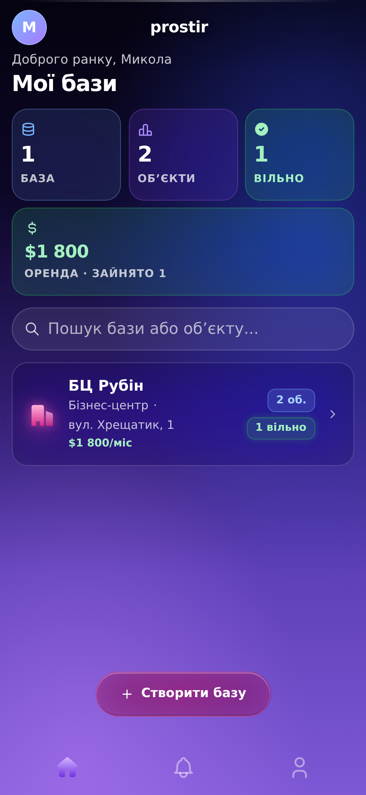
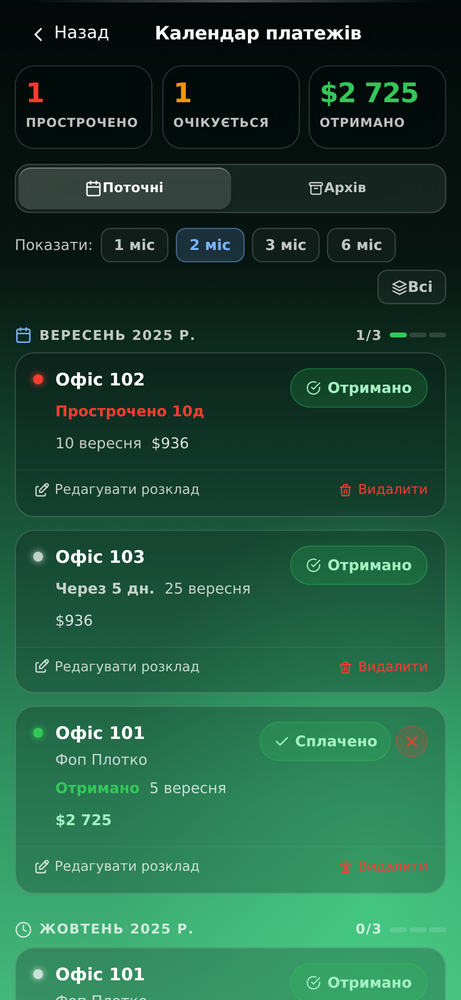
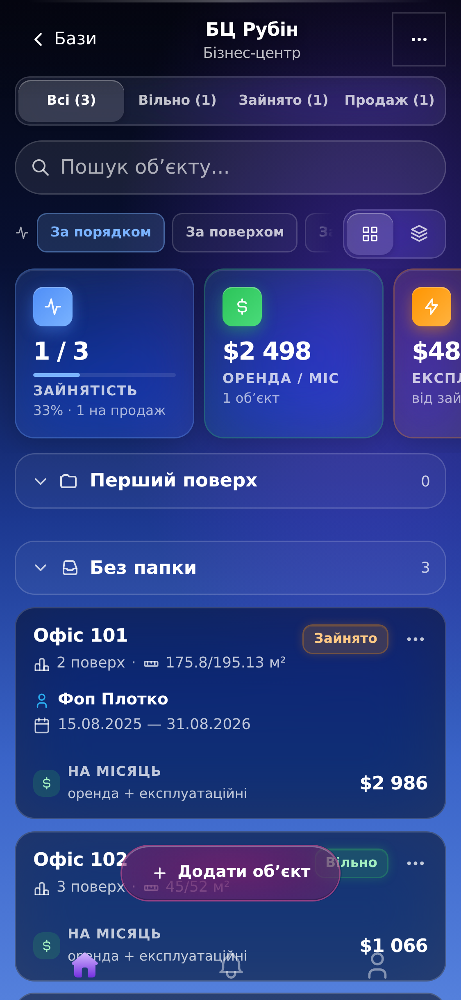
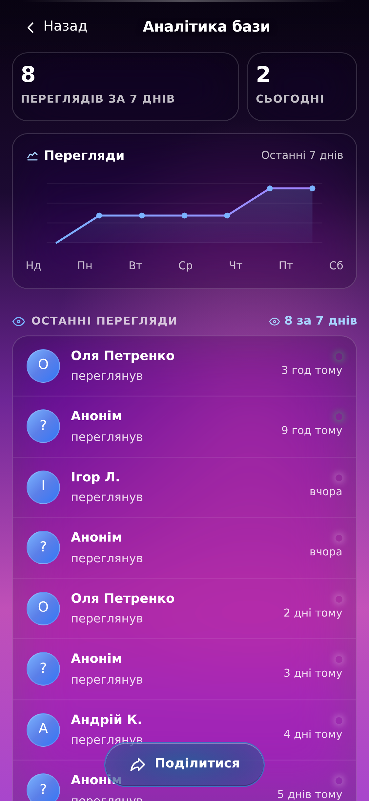
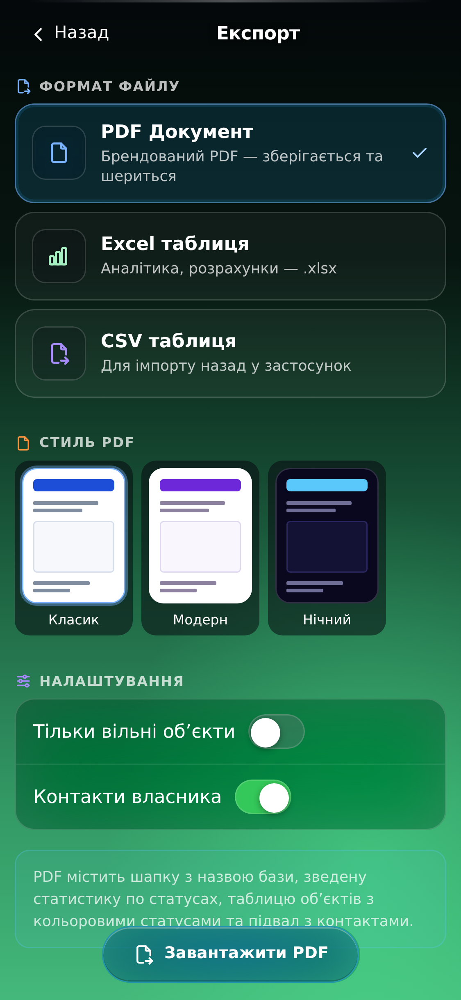
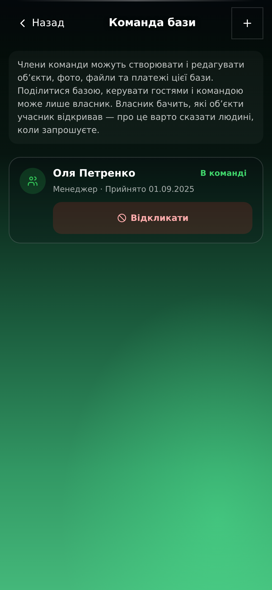
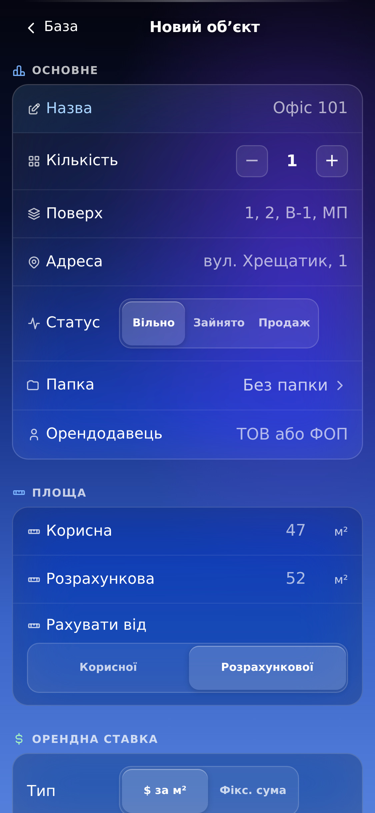
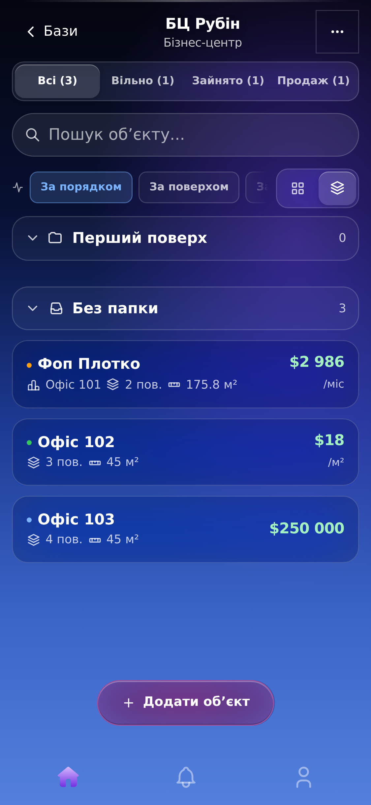
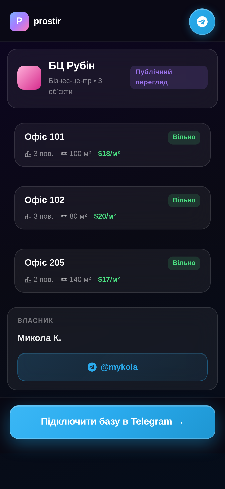
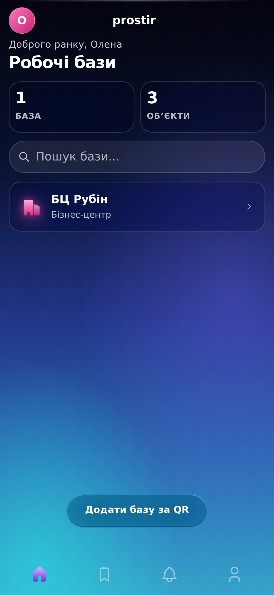

04 · Продукт у кадрі
Одинадцять справжніх екранів
Жодного намальованого мокапу. Кадри зняті з живого застосунку тим самим інструментом, що ганяє тести, у потрійній щільності — на 1080-пікселевому полотні вони лишаються різкими.

01 · Головний екран
Дохід видно одразу
Скільки приносить портфель і скільки вільно — без жодного тапу.

02 · Публічна сторінка
Посилання, що продає
Те, що бачить клієнт. Без Telegram, без акаунта, без встановлення.

03 · Календар платежів
Прострочене — червоним
Нагадування приходить у Telegram, а не лишається в голові.

04 · Обʼєкти бази
Зайнятість, оренда, експлуатаційні

05 · Аналітика
Хто і коли відкрив посилання

06 · Експорт
PDF, Excel і CSV одним тапом

07 · Команда
Редактори без доступу до фінансів

08 · Новий обʼєкт
Ставка, площі, орендодавець

09 · Компактний вигляд
Папки, поверхи, весь портфель

10 · Публічний список
Уся база одним посиланням

11 · Кабінет рієлтора
Чужі бази, підключені за QR